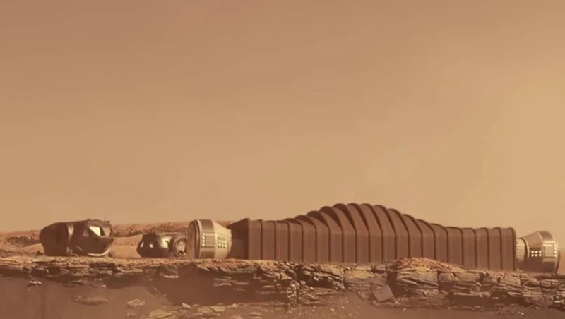
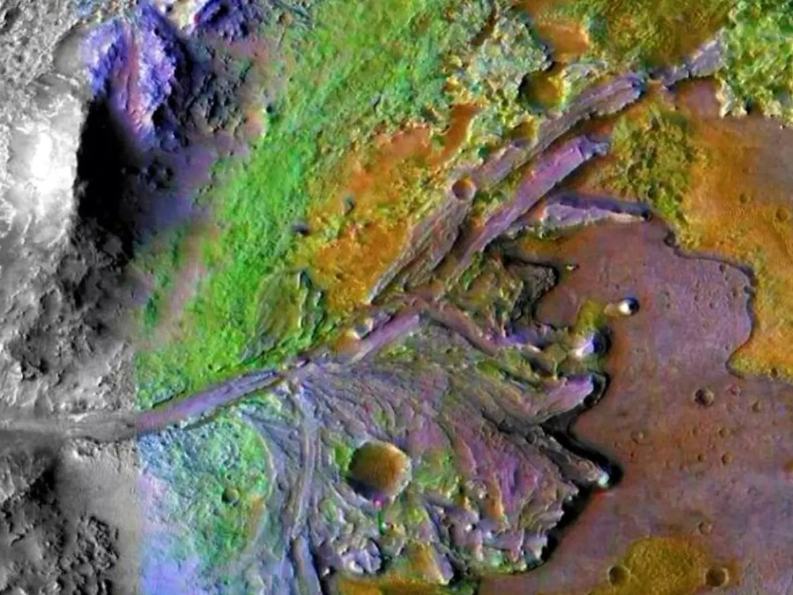
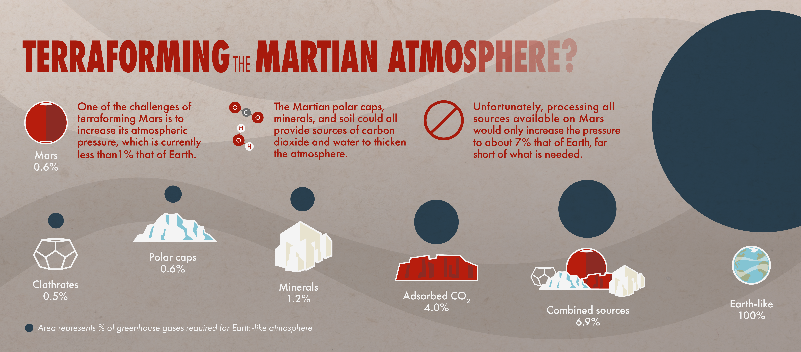
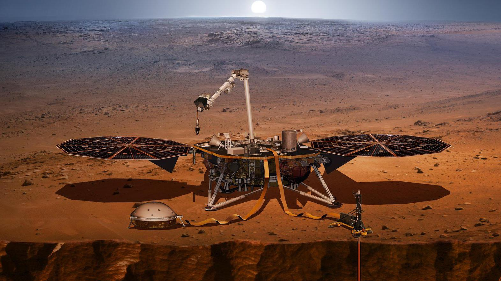
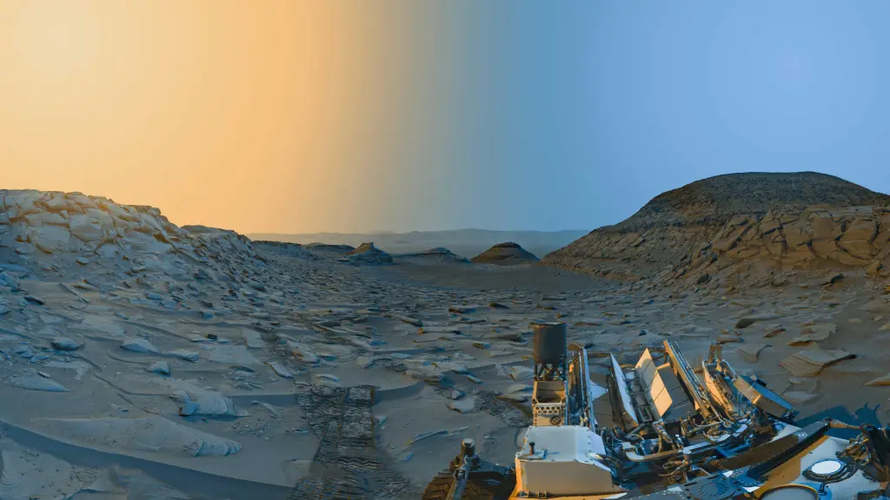

The Mars Mission
The Mars Colonization Initiative represents humanity's boldest venture yet—establishing a permanent human presence on the Red Planet. Our mission is to create self-sustaining colonies that will serve as a second home for humanity and a base for further exploration of our solar system.
With advances in propulsion technology, life support systems, and habitat construction, what once seemed like science fiction is now within our grasp.

It's not a dream anymore ,It's a well caluculated plan.
SPIRIT AND Opportunity
Spirit and Opportunity, the twin Mars Exploration Rovers (MER) launched by NASA in 2003. They were designed to explore the Martian surface and provide critical data about the planet’s geology and past water activity.
Mission Goals:
The rovers aimed to study the history of climate and water on Mars, searching for sites where conditions might have once been favorable for life.

The Twin Explorer's
Habitat Designs

Surface Habitats
Pressurized modules designed to withstand Mars' harsh environment while providing comfortable living spaces for colonists.

Underground Complexes
Subterranean facilities that utilize natural radiation shielding and stable temperatures of Martian caves and lava tubes.

Terraforming Projects
Long-term initiatives to gradually transform the Martian atmosphere and surface to be more Earth-like and habitable.
Ongoing Research
Resource Utilization of Spirit & Opportunity Rovers
The Spirit and Opportunity rovers, part of NASA's Mars Exploration Rover (MER) program, were designed to explore Mars and search for evidence of past water activity. Each rover utilized solar power, radioisotope heaters, and onboard instruments to conduct scientific research and survive the Martian environment.
Power
- Solar Panels: Both rovers relied on solar panels to generate electricity, with cleaning events (dust removal by wind) helping to maintain power output.
- Radioisotope Heater Units (RHUs): To survive the cold Martian nights, each rover used eight RHUs, which generated thermal energy from the decay of radioisotopes, along with electrical heaters that operated when necessary.
- Power Output: The rovers' power supplies varied depending on dust coverage, ranging from 300 to 900 watt-hours per day, with dips during global dust storms.
Instruments
- Panoramic Camera: Allowed for wide-angle views of the Martian landscape.
- Microscopic Imager: Enabled close-up imaging of rocks and soil.
- Engineering Cameras: Provided detailed views of the rover's surroundings and assisted with navigation.
- Spectrometers: Analyzed the chemical composition of rocks and soil.
- Rock Abrasion Tool: Used to expose fresh rock surfaces for analysis.
- Magnet Array: Used to study the magnetic properties of rocks and soil.

Spirit and Opportunity were tasked with uncovering evidence of past water activity on Mars. Their discoveries provided strong indications that Mars once had liquid water on its surface.
- Evidence of Past Water: The rovers found rocks that appeared to have been laid down at the shoreline of an ancient salty body of water.
- Sedimentary Rocks: Opportunity discovered layers of sedimentary rock, which likely formed from deposits in water.
- Mineral Analysis: The rovers analyzed minerals like hematite, a mineral that typically forms in the presence of water.
- Geological Processes: The rovers studied Mars' geological history, revealing processes that shaped its now-arid landscape and hinting at a wetter past.

Searching for Clues to Mars' Past Environment:
By studying the Martian surface, the rovers aimed to gather evidence about the planet's past climate and environment, including the presence of ancient lakes or oceans.

Mission Timeline
- Opportunity :-
- 7th July Launch - Spirit :-
- 10th June Launch
- Opportunity :-
- 25th January Landing
- 30th March Bounce Rock
- 4th May Endurance
- 30th December Heatshield/Heatsheild Rock - Spirit :-
- 4th January Landing
- 11th March Bonneville
- 23th June Pot of Gold
- 31th August Clovis
- Opportunity :-
- 26th April - 10th June Purgatory Dune
- 2nd November Erebus - Spirit :-
- 7th March Larrys Lookout
- 6th september Top of Husband hill
- Opportunity :-
- 29th September Arrival Victoria Crater - Spirit :-
- 5th January Comanche
- 10th february Arrival at home Plate
- 22nd march Tyrone
- 14th April Low Ridge haven
- Opportunity :-
- 1st January Santa catarina
- 6th february Odometer at 10km
- Sand Strom (Mid july-End of August) - Spirit :-
- 1st May Gertude Weise
- Sand Strom (Mid july-End of August)
- Opportunity :-
- 19th June Cape Verde
- 24th August Exit Victoria
- 17th October Adieu Victoria
- 28th November Santorini - Spirit :-
- 25th December Winter Haven
- 30th December
- Opportunity :-
- 12th May Kasos
- 19th July Block Island
- 2th October Shelter Island
- 12th November Marquette Island - Spirit :-
- 29th April Sandtrapped at Troy
- Opportunity :-
- 28th January Concepción
- 24th March Odometer at 20 km
- 19th May Breaking longevity record of Viking 1
- 16th December Santa Maria - Spirit :-
- 22nd March Communications hiatus
- Opportunity :-
- 17th March Departure from Santa Maria
- 2nd June Odometer at 30 km
- 10th August Arrival Endeavour Crater at Cape York
- 9th November Homestake - Spirit :-
- 25th May End of Mission
- Opportunity :-
- 3rd January - 8th May Greeley Haven and radio Doppler campaign
- 6th September Kirkwood - "Newberries"
- 3rd October Whitewater Lake, Matijevic Hill
- Opportunity :-
- 13th February Big Nickel
- 8th May Esperance
- 16th May Departure Cape York
- 1st August Base of Solander Point
- 31st October Yellow-Bellied Glider
- 19th November Moreton Island
- Opportunity :-
- 9th January Pinnacle Island
- 25th January 10th Landing Anniversary
- 20th July Odometer at 40 km
- 14th August Wdowiak Ridge
- 21st September Ulysses Crater
- 19th October Comet "Siding Spring"
- Opportunity :-
- 8th January Summit of Cape Tribulation
- 21st March Spirit of St. Louis Crater
- 15th July Marathon Valley
- Opportunity :-
- 2nd February Knudsen Ridge
- 3rd September Leaving Marathon Valley
- 1st November Spirit Mound
- Opportunity :-
- 22nd February Rocheport
- 23rd May Perseverance Valley
- 26th August Odometer at 45 km
- Opportunity :-
- 10th March Aguas Calientes
- 10th June Last communication
- Dust storm from June to August
- Communication efforts
Join The Mars Initiative
The journey to Mars will require the brightest minds and most dedicated individuals. Whether you're a scientist, engineer, physician, or have other valuable skills, there may be a place for you in humanity's greatest adventure.